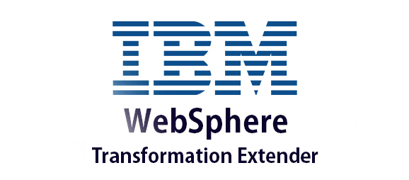
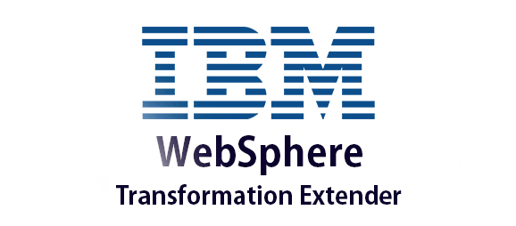

Associate
Cognizant Technology Solutions
Pune/Amsterdam , Amsterdam, Netherlands : November 2014 - August 2019
 

Temenos is a banking software company that provides digital and core banking solutions to financial institutions worldwide. Their products and services help banks and other financial institutions to operate efficiently, reduce costs, and improve customer experience. Some of their popular products include Temenos T24 Core Banking, Temenos Infinity, and Temenos Payments. The company was founded in 1993 and is headquartered in Geneva, Switzerland.
Temenos Triple A Plus is a comprehensive banking solution that is designed to support wealth management and private banking businesses. It includes a suite of modules that cover all aspects of private banking, including portfolio management, client relationship management, order management, risk management, and compliance. Temenos Triple A Plus enables banks to streamline their operations, improve efficiency, and enhance the customer experience. The solution is highly customizable and can be tailored to meet the specific needs of each bank.
IBM WTX is a data integration tool used to transform and integrate data between different systems and formats. It supports various data formats and standards and helps users map, transform, validate, and route data from source to target systems. It's widely used in finance, healthcare, retail, and manufacturing industries.
Key Acheivments:
• Successfully led the design and implementation of MiFID (Markets in Financial Instruments Directive regulation) compliance feature
release for banking products in 3 phases, ensuring zero downtime and receiving excellent client appreciation.
• Redesigned and optimized over 25 critical backend SQL queries resulting in a 50% reduction in user response time.
• Demonstrated proficiency in utilizing ETL processes with WTX to extract data from diverse sources (JSON, CSV, and text files), map &
load into target Sybase schema delivering 70+ user stories.
• Planned and executed the migration of 100+ large-scale data processing banking jobs from Dollar Universe to IBM Mainframe with
100% continuity of critical banking operations.
• Automated client data scrambling using Python scripts to run periodically, ensuring 100% client data privacy, and eliminating the
need for ad-hoc scrambling